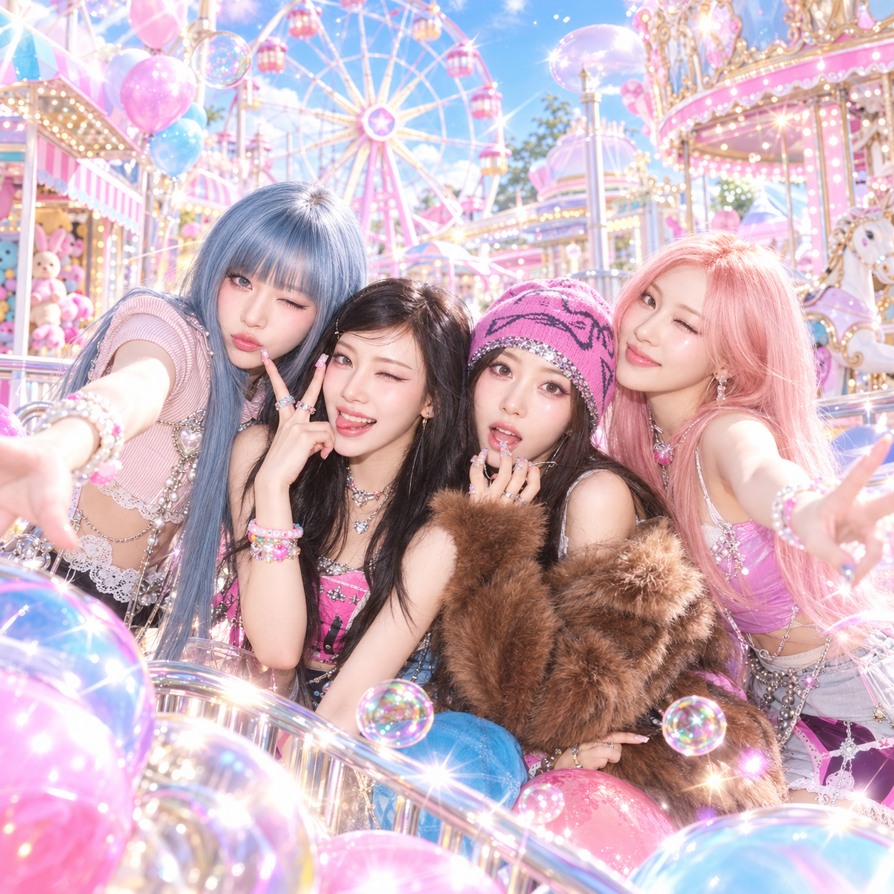
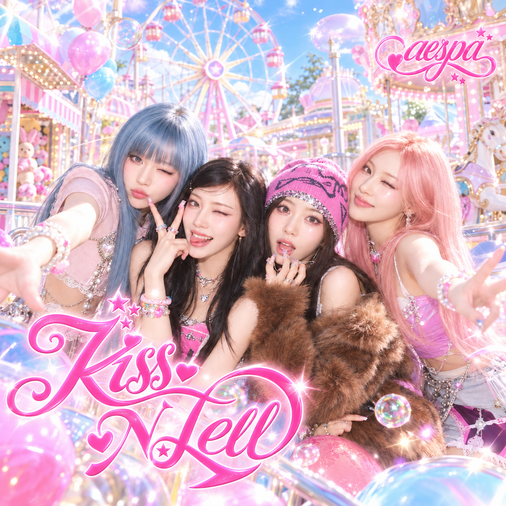

Album Cover
Before / After
I am very satisfied with the result of this project. The album perfectly covers the vibe of the song and why people like this song very much. The colors, brightness and the area that I mentioned was used to perfection. I was concerned that by mentioning “fair” it would generate a basic fair that would not fit the overall aesthetic of the song. I was also concerned that the people were going to be generated standing in the middle of the image without any expressions. I was concerned that a very generic album cover was going to be generated, but I was very surprised with the result.
The song I chose to make an Album cover to is KissNTell by korean girl group Aespa. This song is a very upbeat song and it became popular due to its bright Y2K aesthetics.
Prompts used on Codex
create one square album-cover artwork, without lettering. I will give you pictures of the people that should be included in the middle of this album cover artwork. this album is about a very happy, full energy song that in the music video there is a lot of bright colors like blue, green, yellow, pink. it is set in a fair during the day and it has a very positive vibe to it, while being y2k style. do not create anything until i uploaded the reference pictures

